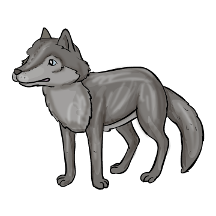
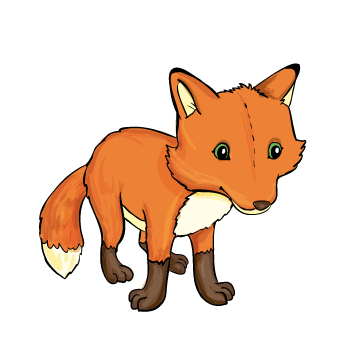
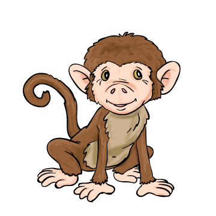

Mit épített a mackó?
1. zajos lakást
2. védő kuckót
3. palotát
Kik költöztek oda?
1. Cecília, az őzike és Zaza, a cinke
2. Vackor és Micimackó
3. Cecília, a cinke és az őzike
Ki nevezte kócosnak a mackót?
1. 
2. 
3. 
Mit mondott neki Méz Zaza?
1. Költözzön ő is oda.
2. Kutasson más kuckó után.
3. Azonnal fusson el.